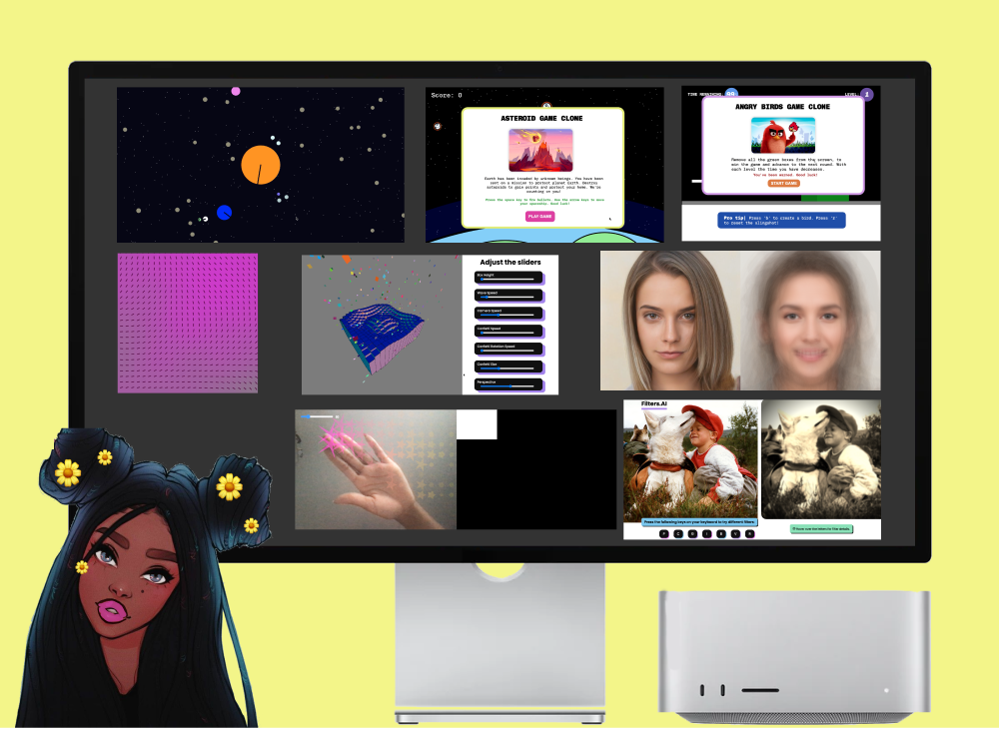
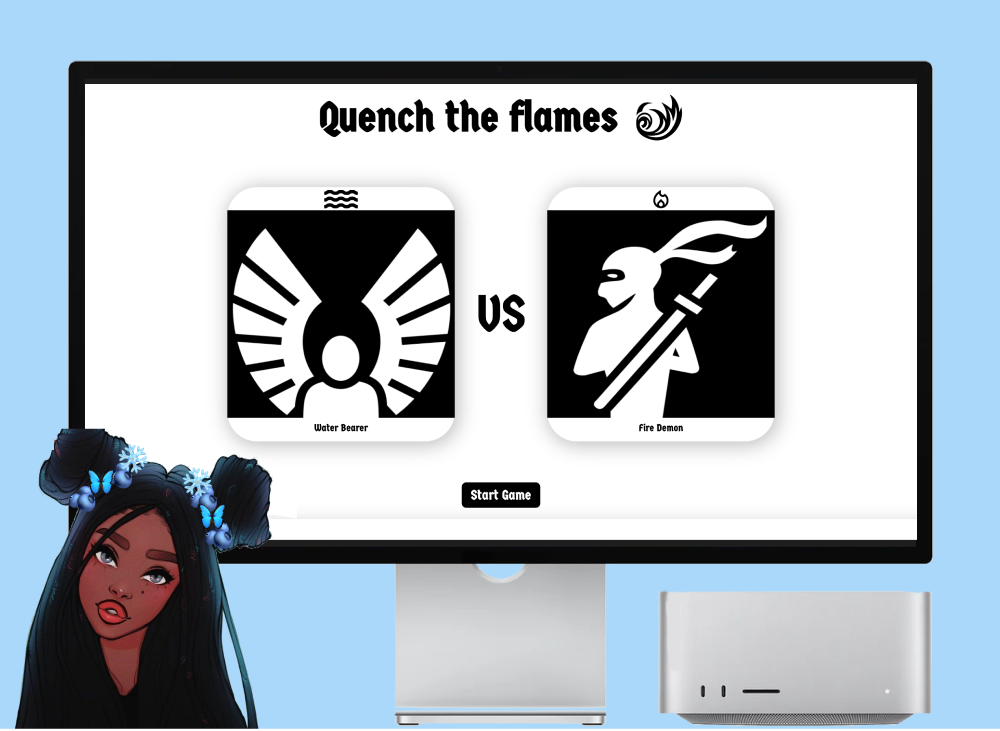

I completed a series of graphical programming projects for a university module. The purpose of these projects was to teach us how to work with images in a different ways. I learnt the following:
Solar System
The purpose of the solar system project was to practise 2D transformations. I had to create a solar system where various planets were orbiting each other. This task required me to use transformations to achieve the requirements proposed.
Asteroid Game Clone
The purpose of the Asteroid Game Clone project was to learn about vector arithmetic, forces, gravity and friction, and collision detection in addition to transformations. I had to use these concepts to successfully build an asteroid game clone.
Angry Birds Game Clone
The purpose of the Angry Birds Game Clone project was to utilise the previous concepts in addition to physics engines, constraints, bodies and composites. I used matter.js for this project.
Noisy Grid
The purpose of the Noisy Grid project was to learn about generative art and design, polar coordinates, oscillation, additive synthesis, fractals, and recursion. I was tasked with completing a constantly evolving generative piece- as shown above.
3D Sine Game
The purpose of the 3D Sine Game project was to practice / learn about 3D renderers, lights, material, texture, and camera. I was tasked with creating a pulsating 3D structure. I extended this by adding sliders to control the variables of the created structure.
Average Face
The purpose of the Average Face project was to practise and learn about colours, colour theory, images, webcam, and pixels. I was tasked with calculating the average face from a collection of given faces. As you move your mouse across the canvas the pixel values of the second image transition from the average face image to the randomly selected image.
Instagram Filter
The purpose of the Instagram Filter project was to learn about image processing, filters, image manipulation software, and convolution. I was tasked with creating my own filter utilising various matrices.
Webcam Piano
The purpose of the Webcam Piano project was to practise and learn about computer vision, colour tracking, background subtraction, frame differencing, openCV, points to track, face recognition and optical flow. I was tasked with creating a computer vision-based interaction.

Quench the Flames is a tic-tac-toe game with a twist. This was a project that I completed for fun. I designed the UI first in Figma. Then I planned the logic needed for the game functionality (I used Notion for the planning). For the most part the game is complete, and is completely functional, however there are still some things that I would like to add, and some bugs left to completely iron out to improve the UX.